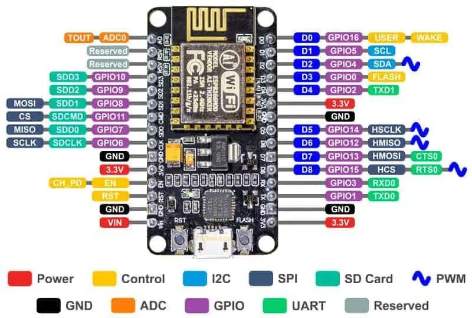

Arduino ist eine Plattform für Elektronik- und Mikrocontroller-Projekte. Diese Plattform umfasst zum einen die Arduino Elektronik-Hardware-Boards und zum anderen die Arduino Software mit deren Hilfe die Boards programmiert werden können. Das Geniale an Arduino ist: Die gesamte Plattform ist „open Source“. Das heißt, dass die Schaltpläne und Layouts der Hardware Boards frei zugänglich sind und jeder sie für seine Zwecke verwenden oder modifizieren kann.
Das NodeMCU Entwicklerboard ist ein kleiner, leistungsstarker Mikrocontroller. Es verfügt ähnlich wie ein Arduino-Board über GPIOs (general purpose input/output), also digitale Ein- und Ausgänge und zusätzlich ist ein ESP8266-Modul integriert. Über dieses Modul kann eine Verbindung in WLAN-Netze hergestellt werden.
https://www.elektrotechnik-einfach.de/was-ist-arduino/

Quelle: https://www.make-it.ca/nodemcu-details-specifications/
WeiterKlebeband für die Linienverfolgung vorbereiten:
Schneide ein Stück Klebeband in der gewünschten Länge ab und klebe es auf den Boden. Achte darauf, dass das Klebeband gerade und gut befestigt ist, um eine klare Linie für den Roboter zu schaffen. Lasse genügend Platz um das Klebeband herum, damit der Roboter genügend Raum hat, um die Linie zu erkennen und ihr zu folgen.
WeiterDer Potentiometer an den Line-Following-Sensoren ermöglicht die Einstellung der Empfindlichkeit, um die Linie genau zu erkennen. Finde den Potentiometer auf den Sensormodulen. Es sollte ein kleiner Schraubendreher-Schlitz oder ein verstellbarer Widerstand vorhanden sein. Drehe den Potentiometer im Uhrzeigersinn, um die Empfindlichkeit zu erhöhen, oder gegen den Uhrzeigersinn, um sie zu verringern. Während du den Potentiometer einstellst, beobachte die Reaktion der Sensoren auf das Klebeband. Ziel ist es, die Empfindlichkeit so einzustellen, dass der Roboter das Klebeband zuverlässig erkennt und ihm genau folgen kann, ohne von der Linie abzuweichen.
WeiterImplementiere die Logik in der loop-Funktion in der main.cpp-Datei, um den Roboter dem Klebeband folgen zu lassen.
Die loop-Funktion wird fortlaufend ausgeführt und ist der Hauptarbeitsbereich des Roboters. In dieser Funktion sollst du den aktuellen Zustand des Roboters aus den Sensorwerten auslesen und entsprechende Aktionen ausführen, um dem Klebeband zu folgen. Die Sensorwerte werden mit den Schwellenwerten verglichen, um festzustellen, ob der Roboter auf der Linie ist oder nicht. Basierend auf dem Zustand des Roboters kannst du verschiedene Aktionen ausführen, um auf der Linie zu bleiben. Zum Beispiel die Motoren steuern, Richtungsänderungen vornehmen oder andere relevante Funktionen nutzen. Es ist wichtig, dass du die Roboterlogik so implementierst, dass der Roboter zuverlässig dem Klebeband folgen kann, ohne davon abzuweichen.
Weiter